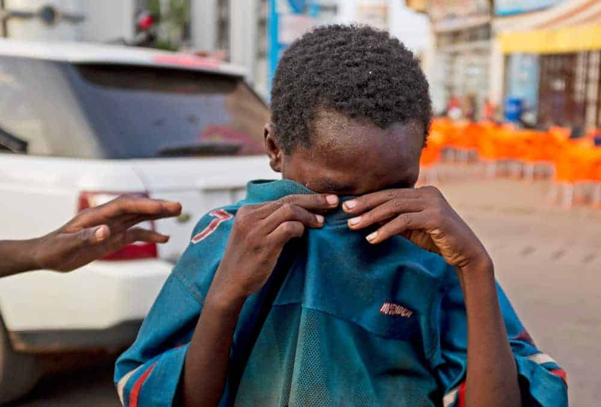
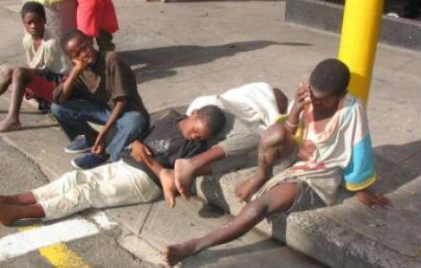

MISSION
"At AMX Children's Service, our mission is to provide a safe, nurturing,
and supportive environment where every child can thrive emotionally,
socially, and academically. Through compassionate care, personalized attention,
and holistic development programs, we empower each child to reach their fullest
potential and become confident, responsible members of society.
We are committed to fostering a sense of belonging, resilience, and hope,
ensuring that every child in our care finds love, stability, and opportunities for a brighter future."

Residential care
Safe and comfortable living accommodations for children who are unable to live with their families.
Personalized care plans tailored to meet the emotional, physical, and developmental needs of each child.

Health and welness
Comprehensive healthcare services including medical check-ups, dental care, and mental health counseling.
Nutrition programs to ensure children receive balanced meals and healthy snacks.
Physical activities and recreational programs to promote fitness and overall well-being.
Life skills training
Practical life skills training in areas such as cooking, personal hygiene, money management, and household chores.
Career readiness programs including job skills training, resume building, and interview preparation.
Support for transitioning to independent living or reunification with families when appropriate.
FAQs
What services does your organization provide to street children?
Our organization provides a range of services tailored to meet the needs of street children, including [list services such as shelter, food, healthcare, education, counseling, vocational training, etc.].
How do street children access your services?
Street children can access our services through outreach programs, referrals from social workers, police, or community members, or by directly approaching our drop-in centers or shelters.
Are your services free?
Yes, our services are provided free of charge to street children in need. We rely on donations, grants, and community support to fund our programs.
How long can street children stay at your shelters or receive your services?
The length of stay or duration of services varies based on individual needs and circumstances. Our goal is to provide stability, support, and opportunities for each child to transition to a safe and sustainable living situation.
What happens to street children after they receive your services?
We provide ongoing support and follow-up care to ensure that children can reintegrate into their families whenever possible, access education or vocational training, and build a sustainable future.